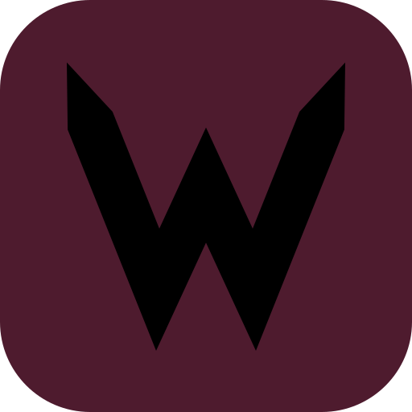

WzLab · Arquitectura
PWA de organización personal — un solo archivo, sin backend ni dependencias. Tocá cualquier bloque para ver el detalle.
📄 1 archivo · index.html
⚙️ Vanilla JS · 0 dependencias
💾 localStorage · key "rimu2"
🌐 Offline-first · sin red
🚀 Vercel · branch main
🕒 UTC-3 · día corta a 00:00 AR
1
Shell PWA
Cómo el navegador la trata como app instalable
📱
Meta PWA + Manifest
standalone · iOS/Android
🎨
Iconos
SVG + PNG generados
🧩
Layout & safe-area
#app · scroll · nav
🔒
Anti-zoom iOS
gesture/touch handlers
▼
2
Navegación & Router
Una sola página, pantallas que se muestran/ocultan
🧭
Bottom Nav
goTo() · 4 botones
⋯
More Sheet
goToMore() · bottom sheet
🔀
Render Router
renders[name]()
▼
3
Módulos / Pantallas
Cada uno con su estado de vista y render propio
✅
Tareas
lista · kanban · semana
🔥
Hábitos
franjas · calendario
🏋️
Workout
templates · sesión
💰
Finanzas
presente · oculto
▼
4
Lógica de dominio
Funciones puras + efectos (timers, fechas)
🕒
Fechas UTC-3
isoAR() · today()
🌙
Reset de medianoche
scheduler 03:00 UTC
⏱️
Timers
pomodoro · sesión · estudio
📈
Cálculo de racha
calcStreak() · heatmap
💬
Toast
feedback no-bloqueante
▼
5
Estado & Persistencia
Fuente de verdad única en memoria + disco
💾
load() / save()
localStorage "rimu2"
👈 Tocá un bloque del esquema para ver qué hace, sus funciones clave y cómo se conecta.
Modelo de datos — objeto S
let S = { … } → localStorage.setItem('rimu2', JSON.stringify(S))